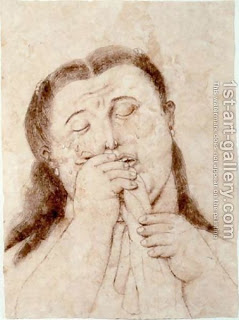

Bava Metzia 59 - Not to Offend Anybody with Words
A man must be especially careful not to offend his wife with his words - or any other woman - because with her tears she may bring retribution on him. One must also be very careful about his wife’s honor, because a person’s house is blessed only on account of his wife.
Rabbi Eliezer and the Sages argued about the purity of sectional ovens. Rabbi Eliezer performed multiple miracles, but it was no proof. Heavenly voice said that he was right - but the Torah is not in Heaven, but rather decided by knowledgeable men. The Sages then rightfully excommunicated him. Still, since he was upset, a third of the world’s crops rotted and Rabban Gamliel died.
Test your knowledge of the daf